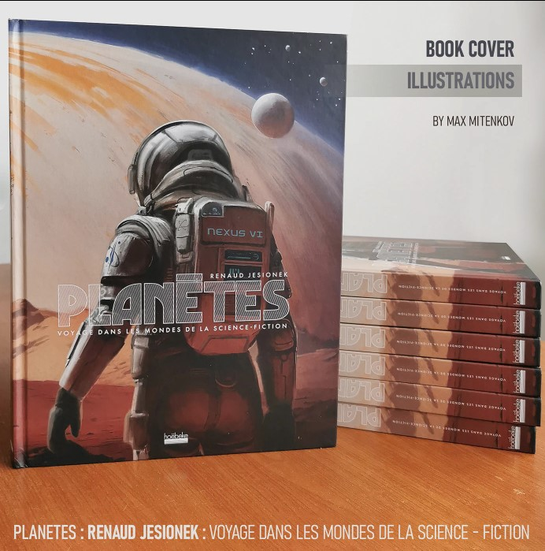
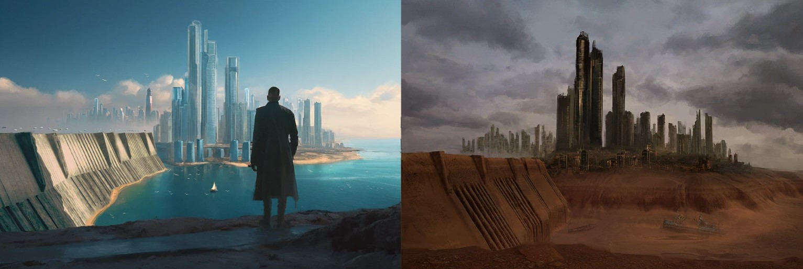
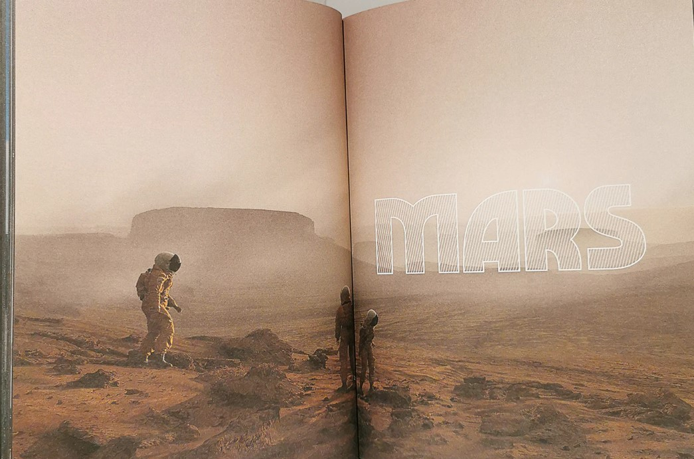
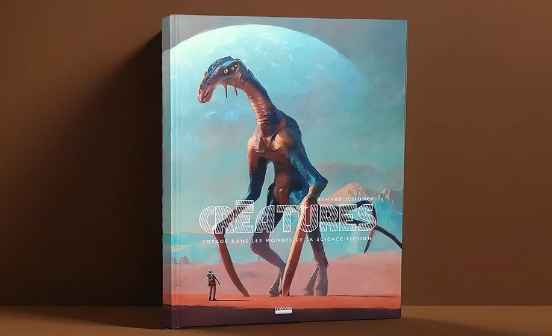
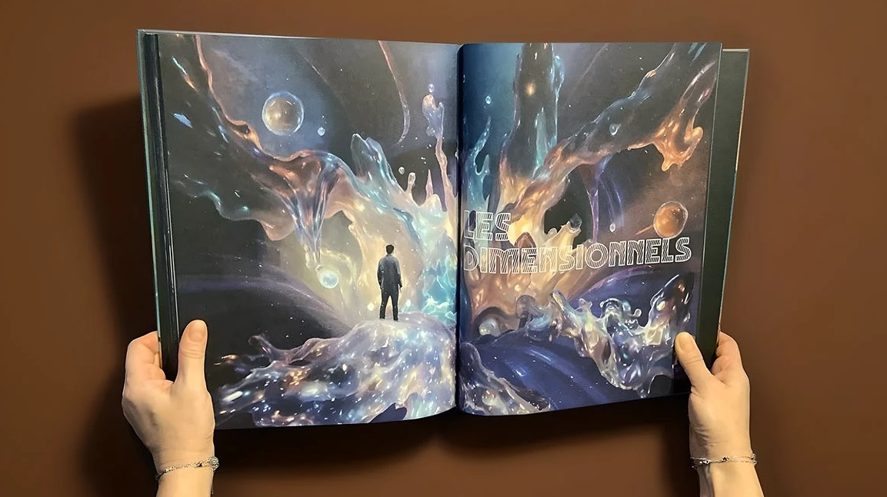

Case Study: Cover Art for Hoëbeke's "Voyage dans les mondes de la science-fiction" Series
How to Create a Cohesive Sci-Fi Book Cover Series for a Major Publisher
Cover illustrator Max Mitenkov (vimark) designed the cover art and interior illustrations for Renaud Jesionek's Planètes (2024) and Créatures (2025), published by Hoëbeke — an imprint of Hachette Livre. This case study breaks down the process of building a visually unified science fiction book series for one of Europe's largest publishers.
The Project: Two Books, One Universe (And a Third on the Way)
When Hoëbeke commissioned the covers for Renaud Jesionek's science fiction series, the goal was clear: create a visual identity that would stand out on French bookstore shelves while signaling "classic science fiction" to readers browsing online.
The series — Planètes (ISBN 9782073067906, November 2024) and Créatures (ISBN 9782073120670, November 2025) — explores alien worlds and lifeforms through a lens of scientific curiosity and wonder. The publisher needed covers that would:
- Feel grounded in the tradition of great sci-fi illustration (Clarke, Asimov editions).
- Appeal to modern YA and adult crossover readers.
- Work as a matched pair — instantly recognizable as part of the same series.
Currently in production: the third installment in the series, scheduled for release in August 2026. This ongoing collaboration with Hoëbeke demonstrates the publisher's confidence in the visual language established for the series — and the value of a long-term illustrator-publisher relationship.
The Design Challenge: Balancing Classic and Contemporary
Visual Language for a French Sci-Fi Series
Science fiction cover design in the French market carries specific expectations. Readers associate the genre with:
- Saturated, atmospheric color palettes (deep space blues, alien sunset oranges).
- Sense of scale — vast landscapes, tiny human figures, impossible architecture.
- Texture and detail that rewards close inspection on a physical book.
For Planètes, the cover needed to evoke world-building at a planetary scale — vast environments that feel lived-in and scientifically plausible. For Créatures, the focus shifted to bio-forms and alien ecology — organic shapes that feel both beautiful and unsettling.
For the upcoming third book, the visual system continues to evolve while maintaining the core palette and compositional rules established in the first two volumes.
Maintaining Series Cohesion Across Three Volumes
A critical requirement from Hoëbeke was that the books read as siblings, not strangers — now across a trilogy. The solution:
- Shared palette: All covers use a restricted range of deep teals, warm ambers, and starfield blacks.
- Consistent typography integration: The title treatment sits in the same spatial relationship to the illustration in each design.
- Scale language: All covers employ extreme foreground-to-background depth — a figure or object in the near field, a vast environment receding into atmospheric haze.
- Evolution, not repetition: Each cover introduces a new visual motif while respecting the established system.
This approach ensures that when the books are displayed side by side — whether in a brick-and-mortar bookstore or as thumbnail images on Amazon.fr — they form a clear visual unit, even as the trilogy grows.
The Process: From Brief to Final Art
Research and Concept Phase
Every book cover starts with questions. For this series, the key research included:
- Classic French sci-fi illustration: Studying covers from Fleuve Noir and other historic French publishers.
- Current market positioning: Analyzing how competing titles on Amazon.fr and in physical stores present science fiction.
- Narrative extraction: Identifying the single visual moment from each book that captures its emotional core.
For the third volume, the process includes an additional layer: retroactive consistency checking — ensuring the new cover doesn't just match the previous two, but actively enhances their collective impact.
Sketch and Approval
The workflow followed a standard publisher pipeline:
- Thumbnail sketches (3–5 directions per cover).
- Selected direction refinement with Hoëbeke's art director.
- Full-color rough for final approval.
- Final illustration at print-ready resolution (300 DPI, CMYK, with bleed).
Because Hoëbeke is an imprint of Hachette Livre, the approval chain includes both imprint-level and group-level art direction — requiring precise communication and revision discipline.
Interior Illustrations
Beyond the covers, the project includes interior illustrations — a rarity in modern publishing and a signal of the publisher's investment in the series' physical object quality. These illustrations extend the visual language of the covers into the book's interior, creating a unified reading experience across all three volumes.
Visual Documentation
Planètes: Cover and Physical Edition

Planètes: Interior Illustration

Planètes: Book Spread

Créatures: Cover Art

Créatures: Interior Spread

Results and Publisher Feedback
Both Planètes and Créatures were released on schedule and are available through major French retailers including Amazon.fr, Fnac, and independent bookstores.
The series has been positioned by Hoëbeke as a flagship science fiction offering, with the cover art featured in:
- Publisher catalogs and seasonal previews.
- Online retailer listings (Amazon.fr, Fnac.com).
- Social media marketing campaigns.
The third volume, scheduled for August 2026, continues this momentum — proof that a well-designed visual system can scale across multiple releases and build reader recognition over time.
What This Means for Authors and Publishers
Working with a major publisher like Hachette Livre (through its Hoëbeke imprint) requires:
- Adherence to brand guidelines while maintaining artistic voice.
- Technical precision — print-ready files, correct color profiles, bleed and trim specifications.
- Clear communication across language and cultural boundaries (the project is managed in French and English).
- Long-term thinking — designing not just one cover, but a system that can evolve across a multi-book series.
If you're an author or publisher looking for cover art that meets major-house standards — whether for a standalone novel or a multi-book series — get in touch or view more work on Behance.
About the Illustrator
Written by Max Mitenkov (vimark), book cover illustrator with 70+ published projects for HarperCollins, Hachette Livre, and independent authors. Currently working on the third volume of the Hoëbeke sci-fi series. 71 five-star reviews on Reedsy. Based in Belarus, working worldwide.